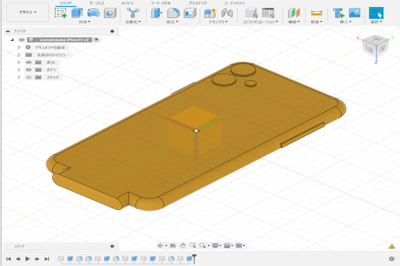
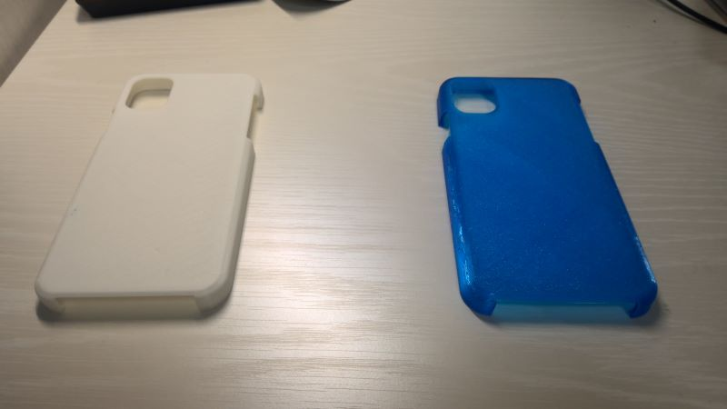

０からスマホケースを作ろう！
今回、初めは自分が今使っているsurfaceのパソコンのような折りたためるスマホケースを作ろうと思ったのですが、サイトからiPhoneのデータを持ってきて、作ってみたらスマホが入らなかったのと、折りたためるようにするにはヒンジなんちゃらとかいうのを使う必要があるらしくあまりに難しそうだったので、その一個前の段階のスマホケースを作ることにしました。ステップ１
まずはiPhonのサイズを知る必要があります。アクセサリーガイドラインから寸法を確認します。自分のスマホがiPhon11なので11のサイズで作成していきます
このURLから自分のスマホのサイズを確認できます。
ステップ２
スマホケースを作る前にiPhoneのモデリング作成をする必要があります。iPhoneサイズの長方形を書きます。寸法図通りにスケッチを指定します。次にその長方形をiPhoneの厚み分押し出します。次に、角をフィレットします。記載がないため、10㎜と推定。
今度は、上と下の角をiPhoneの厚みの半分フィレットをします。次にジャック、スピーカー穴の範囲を示すボディを追加します。スピーカー穴範囲のスケッチを作成し、長方形を作成します。（ボディを非表示にするとやりやすい） 飛び出し量は5㎜とします。幅はスピーカー穴の寸法から算出し、スケッチを終了します。ボディを表示しスケッチの長方形を押し出しで結合します。角をiPhoneの厚みの半分フィレットを行います。スピーカーのボディは完成です。スリープボタンと音量調整ボタンも同じように作成します。
次にレンズの範囲と寸法を確認し、スケッチでレンズとライトの範囲を書きます。レンズとライトの範囲を示す円を描き寸法図通りに寸法を指定します。レンズとライトの円を1mm押し出します。 習性から外観の色を変更します。iPhoneのモデルは完成したので保存します。
できたのがこちら↓

ステップ３
ケースの新規デザインを作成します。スケッチを作成し、長方形を描きます。寸法図を確認し、長方形をスケッチ寸法で外形寸法+板厚1.5mm×2+0.5mmにします。スケッチをiPhoneの厚み+1.5mm押し出し、保存します。
できたのがこちら↓
.png)
ステップ４
新規デザインを作成し保存します。データパネルを表示しiPhoneとケースをドラッグアンドドロップします。ケースを固定しインプレイス編集をします。角をフィレットし、シェルを行います。厚みは1.5㎜。上面を選択しスケッチを作成します。
オフセットで内側の線を選択します。オフセット距離は1.5mm押し出します。スケッチとボディの上面を選択します。押し出し距離は1.5mm。ケースのインプレイス編集終了。iPhoneをz方向に1.5mm移動
できたのがこちら↓
.png)
ステップ５
検査の干渉から干渉チェック。ケースの切り取るべき場所がわかる。ケースのインプレイス編集をします。まずジャック、スピーカーを切り抜きます。ケースの側面にスケッチを作成し、長方形を描きます。 ケース側面からの寸法の厚みを1.5mmとします。押し出しでスケッチを切り抜きます。
電源ボタン範囲のスケッチを作成します。ケースの側面を選択し、長方形を描きます。iPhoneのボタンの寸法を2mmとします。同一線上拘束で底面と一致させます。押し出しで3mm切り抜きます。同じように音量ボタン範囲も切り抜きます。
次にレンズとライトの範囲を切り抜きます。底面を選択してスケッチを作成します。円がすべて入るような長方形を描きます。レンズ範囲との距離は1mmとします。フィレットを行い押し出して切り抜きます。（ボディを非表示すると選択できます。）これで完成です。
完成したスマホケースがこちら↓

こちらの動画から完成したスマホケースの操作性など見れます。